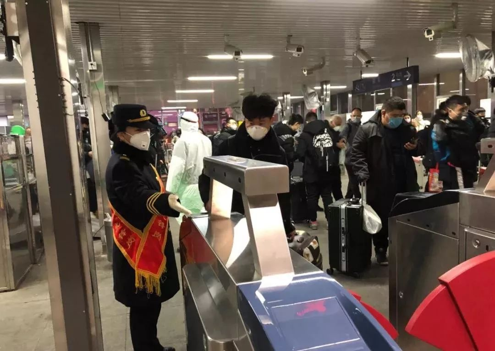

有序复工与做好防疫，一个都不能少！
原文链接 备份链接 _ 2月10日这个周一，中国多个省市迎来了春节后第一个工作日，虽然比原定假期已推迟一周，但政府、企业和个人所面临的疫情防控压力都不小。当前，湖北省仍需要着力抓好疫情防控，其他地区也需要做好防控的同时有序恢复生产 _ …
以下文章来源于AI财经社 ，作者AI财经社作者


开工前最忧伤的段子可能是，“今天戴着口罩去买口罩，口罩没买到，还损失了一个口罩。”
2月10日起，部分企业陆续复工，宅在家里即为国家做贡献的使命宣告终结。当下的主要矛盾已经转化为企业开工自救与员工口罩供给不足之间的矛盾。一边是线上、药店口罩齐断货，一边是没有口罩不能出现在公共场所，甚至不许乘坐公共交通。
这个矛盾该如何解？
文 | 孙静 麻策
编辑 | 赵艳秋
封面图 | 来源北京地铁微博

复工最大焦虑：没口罩
2月10日早上7点半，在北京亮马桥工作的张昊泽捂着N95口罩，走入地铁6号线北运河西站。往常的早高峰，他会快速挤到车厢中部、在靠近金属支柱的位置放好双脚。如果上车速度不够快，被卡在靠近车门位置，简直会是一场灾难——接下来草桥、常营等大站的人流会像沙粒一样，瞬间填满车门两侧空隙，里面的人经常被挤得双脚离地、掏不出手机。
不过这种场面在首个复工日并未出现。6号线竟然一路都有空座，这让一批兀自忐忑的上班族，感到些许心安。环顾四周车厢，大家都低头着，在口罩之下用力呼吸。有人戴的是粉色、天蓝色的一次性医用口罩，也有人佩戴的是白色棉布口罩。
在上周末公司通知10日复工后，张昊泽所在部门群里就开始涌动着口罩焦虑。一名同事问，家里口罩消耗殆尽，到现在还买不到新的，怎么办？另外一个问，穿雨衣坐地铁会不会被人笑话？其他同事很快安慰他：没关系，反正地铁上的人也不认识你。

▲图 / 北京地铁微博
在疫情面前，口罩成为个体自救的最后一道屏障。但是在医用物资紧缺、一线医护人员都在为口罩、防护服发愁的情况下，复工上班族的焦虑短期内似乎难以纾解。
很多人都经历了开工前抢口罩的紧张。某4A广告公司文案袁莉说，大年三十当天她还在土耳其旅行，一个经历过非典的北京同事提醒她，赶紧囤口罩、消毒液、除菌洗衣液。她慌忙下单，在京东上买了6个N95，100元；100个一次性口罩，90多元；同时在淘宝上买了40个戴呼吸阀的防雾霾口罩，以及酒精片、护目镜。
到2月10日，除了看起来最无关紧要的护目镜已经到货，其他都是未发货状态。前几天，土耳其导游告诉她，搞到1万个英国产3M口罩，每单最少120个。袁莉下了一单，准备再与同事拼购。消息刚发出，三个同事就认领了70个。“我们特意选的不戴呼吸阀的，想着如果自己中招，对别人也是一种保护。”
很多人都为口罩焦虑。一个同事特别着急地告诉袁莉，自己每天定点到网易上抢购，但至今仍未成功。微博上， 一名嘉兴网友在当地实现口罩预约后，特意开了闹钟，无奈总也抢不到，她的老父亲没有口罩，又不能不出去买菜，结果在菜市场被人家指着鼻子骂。在杭州，口罩预约信息每天都要重复填写，更是麻烦。在上海，一名没戴口罩想要强闯地铁的乘客，直接被行政拘留。
买不到口罩的人，开始研究各种“硬核”自救。有人购买医用无纺布甚至用纸巾，在家自制口罩。还有人研究各种延长口罩寿命的办法：比如紫外线消毒、蒸煮或者将使用过的口罩真空封存，搁置7天后再拿出来使用。
口罩再生问题甚至惊动了院士。据媒体报道，86岁高龄的闻玉梅院士建议研究团队用实验寻找一次性医学口罩的复用对策，结论是以保鲜袋包裹用过的口罩，电热吹风机30分钟后即可重复使用。
袁莉觉得自己还算幸运的，因为北京雾霾，她还有5个N95口罩存货，或许能扛到土耳其口罩发货。但是开工前她收到两个消息，一好一坏：坏消息是导游的口罩没了，据说4000个口罩在海关被扣——不知真假；好消息是公司通知继续在家办公一周。
并没有那么幸运的医疗器械行业某员工在微博吐槽，她们早已开工赶货，但同样口罩紧缺，有生产线同事戴的就是纯棉口罩。她也理解——看起来戴口罩仅仅为了融合大家，不被排斥，反而不是保护自己。

▲ 图 / 人民日报微博
企业复产：有没有口罩都烦恼
“口罩现在意味着你能不能开工，开工意味着你能不能挣钱，挣钱意味着你能不能活下去。”一名南方企业主告诉AI财经社，企业同样为找口罩犯难。
在一家企业传给AI财经社的当地政府规定复工材料的清单上显示，复工需要满足口罩、84消毒液、红外式体温枪、消毒洗手液、手套等物资齐全的要求。比如，一个工厂要为员工一天准备两个口罩，开工前要先准备好10天的量。

2月3日远程办公后，深圳一家企业的董事长组织管理层天天开远程视频会议，其中一个连续讨论了几天的议题是，怎么为员工抢购口罩。这家企业有上千人，有设计研发人员以及附属工厂。按照政府的要求，在办公室和工厂复工后，口罩是必须的。公司统计了2月10日能正常到办公室报到的员工，发现除了一小部分员工被封在湖北各地以外，还有大约三分之一的员工因为家乡封路回不了深圳。即便如此，员工一人一个口罩，在当前口罩如此紧缺的情况下，依然是一个不小的采购量。
形势本来在朝着乐观的方向走。一名管理层称，公司采购部通过关系，联系了一家口罩厂，对方答应供一部分货。随后董事长告诉大家，他们注册地所在的区政府拿到一批口罩，企业可以申领。如果申请成功，有望解决一部分需求。但直到2月9日，复工口罩仍没有着落。
就连董事长的心气都有点变了，他在员工群分享了一个链接，大意是在哪些药店可以买到即将空运到深圳的数百万口罩……然后号召员工尽量自己去抢购和准备。
因为疫情不明，知识短视频服务商视知在2月7日晚临时决定，再推迟一周复工。负责人力资源的同事告诉视知创始人兼CEO马昌博，各种同行群都在讨论复工时间问题，看得出大家都很纠结。马昌博认为，与其让员工别别扭扭到公司上班，不如安心在家办公，特殊时期人最重要。尽管部分业务如拍摄制作和商务洽谈可能会受较大影响。
公司层面也在寻找口罩，人力资源部门联系了七八家，就是没有找到合适的渠道，要么发货太晚，要么资质令人生疑。马昌博本人也在朋友圈发起求助，中间有两次付款后也没拿到货。其中一次，对方要求1万个起订，N95口罩价格在20-25元之间，一次性医用口罩约4元一个。视知与另外一家企业拼购、付款，但半小时后对方找过来：对不起，被别人抢了，已经没有货了。
他又请在韩国的朋友帮忙采购，好不容易找到货源，结果遇到当地管控，口罩发不过来。当时视知恰好有员工在日本，公司委托其在当地采购，结果要排号，目测排到一个月之后。远水解不了近渴，他们放弃了。截至发稿，这家拥有100多名员工的创业公司，仍未解决口罩的难题。
知情人称，能找到口罩的企业也不一定省心。有家公司费劲心力，从海外买到了1万个复工口罩，然后，被当地政府因疫情防控征用，自己还是复不了工。
口罩厂老板：我家也没口罩了
即便作为一个口罩工厂的管理者，杨铮自己家里也已经没口罩了。他多数时间吃住在工厂，“嘱咐老婆孩子少出门”。
在位于四川成都的这家小型口罩生产工厂，几十名工人三班倒赶制口罩。杨铮告诉AI财经社，他从腊月二十八开始投入工作，至今没有休息。对于春节期间加班的几十名工人，公司给予“能力范围内”的经济补贴。

▲ 图 / 人民日报微博
新冠肺炎发生以来，为了给这场疫情防控阻击战提供充足“弹药”，医疗用品企业加紧生产。截至目前，四川省共出台了11项政策用以加大疫情防控物资和生活物资保障，针对疫情防控物资保障，要求企业“千方百计扩大产能”。
四川省应对新冠肺炎疫情应急指挥部在2月5日设定目标，力争2月13日前达到日产医用口罩100万只的生产能力。
2月7日在国新办发布会上，财政部相关人士说，为鼓励企业保质保量增加紧缺的重点医疗防护物资生产，如N95口罩、防护服等，将全部由政府兜底采购收储，这给生产企业吃了一颗“定心丸”。
据杨铮介绍，四川成都共有8家具备资质的医用口罩生产企业，各家都在加班加点，“只有小部分留下给工厂员工自用”，其他都配合政府管理部门调配。
这意味着，市场上能销售的专用口罩变得极为有限。“对于线上而言，未来很长一段时间内都会无货可发。”安徽专门销售N95口罩的经销商刘景善说。目前，各电商平台的正规货源已经非常稀缺。
根据工信部的统计数据，我国口罩产能已是全球第一，之前日口罩最大产能为2000多万只。自1月21日联防联控机制成立以来，工信部全力动员企业复工复产。但在疫情面前，供应仍存在缺口。
为缓解口罩紧缺的形势，一批大型企业“跨行”生产口罩、防护服等急需医疗卫生用品。其中，车企冲在了前线，包括通用五菱、广汽、比亚迪等都已宣布投入口罩等医疗卫生用品的生产。此外，中石化、富士康等企业也加入了跨行生产支援疫情的行列。通用五菱预计口罩日生产量达到170万只以上，富士康预计2月底可达到日产200万只。不过，一些大企业自身就有庞大的需求，另一些企业目前计划供给一线疫区、医院，暂不考虑对外销售。
一家医疗器械公司创始人告诉AI财经社，他们口罩的线上销售渠道已经处于暂停供应的状态。对于下一次线上购买的开放时间，其表示“还不知道”。而之前一段时间，线上货源供应虽然有限，但并未停止。因为开工手续和当地政府部门对于复工带来人员流动的担忧，该公司的一座自有的小型工厂暂时尚未获得复工允许。
另一位网络销售口罩等产品的企业人士则对AI财经社表示，在他们的平台上，一次性医用口罩始终处于缺货状态，而普通一次性口罩的价格从年前至今已经增加三倍。“从5毛一个，涨到了现在的2元一个。”而相对疫情带来的巨大心理恐慌，普通一次性口罩显然不能带给人们充分的安全感。
据AI财经社了解，很多线下药店目前仍有口罩供应，但处于限量状态，多数情况下需要早起去排队抢购。什么时候口罩供应能够充足，普通人能够正常购买到口罩，不必为开工惊慌？
“难，口罩脱销将会持续。“上述医疗器械公司创始人建议，“口罩真的要开始循环用了。“
（应受访人要求，张昊泽、袁莉、杨铮为化名。）
每人互动
你的口罩存货还能用多久？

文章授权转载自AI财经社（ID：aicjnews）


原文链接 备份链接 _ 2月10日这个周一，中国多个省市迎来了春节后第一个工作日，虽然比原定假期已推迟一周，但政府、企业和个人所面临的疫情防控压力都不小。当前，湖北省仍需要着力抓好疫情防控，其他地区也需要做好防控的同时有序恢复生产 _ …
原文链接 备份链接 经济观察报 记者 种昂 2月4日，一批5万只口罩由一辆货车缓缓运进了江苏某汽车配件工厂的大门，刘天元总算松了一口气。作为这家民企高管兼内部疫情防控的副总指挥，他肩负着企业复工的重担。此时，刘天元似乎看到了复工的希望。 …
原文链接 备份链接 _ 全国除湖北以外地区的确诊病例数增速连日放缓，让部分制造企业看到了希望，基于疫情防控的逐步进展，安全复工自救计划也开始酝酿 _ 文 |《财经》记者 张威 编辑 | 袁满 12个园区、1500家企业、近10万员工，总 …
原文链接 备份链接 11.02.2020本文字数：4000，阅读时长大约8分钟 导读：企业虽然很艰难，但目前要做的就是配合执行国家的各项要求，早日战胜疫情，企业能早日找到出路。 作者 | 第一财经 张苑柯 元宵节刚过，疫情之下第一批复工 …
原文链接 备份链接 面对依然紧张的防疫形势，上海的街道、居民区、楼宇不断放出防疫大招，以上海人特有的智慧筑起“上海堡垒”，守卫这座城市。 文 | 陈 冰 2月10日是上海正式意义上的“复工日”，在经历了一个史无前例安静春节之后，人员返程、 …